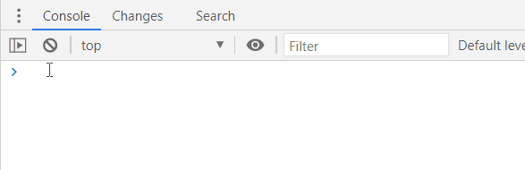

Rapidly extends DevTools with custom plugins without leaving your console
DevTools specific plugins to improve the developer experience.

To start, type this code in the devtools console:
{% highlight js %}
import("//r8s.io")
{% endhighlight %}
More details in the docs section